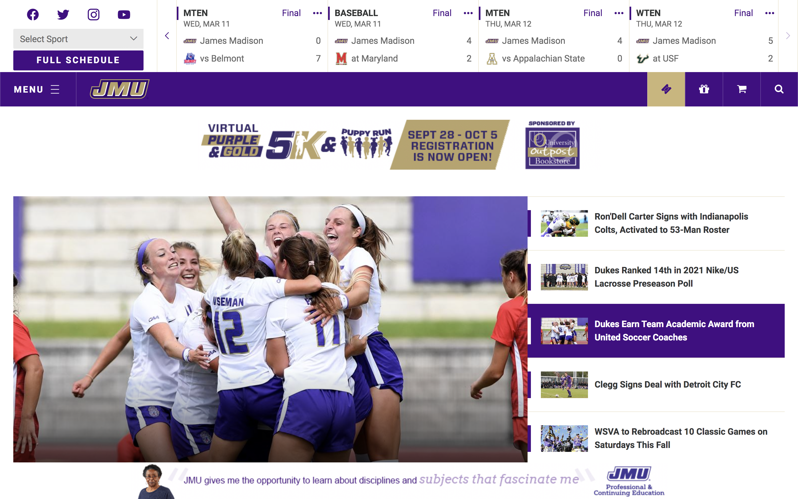

Heuristic Evaluation
Last Updated: September 30, 2020
As another effort to better prepare myself for the peer reviews and reviewing my own work for Project 1: Handcradted Site project for CS347, I decided to revisit things I have learned about evaluating a website based on Nielsen's 10 usability heuristics.
What is usability?
According to an article Usability 101: Introduction to Usability by Nielsen Norman Group, usability is "quality attribute that assesses how easy user interfaces are to use". In other words, it's a measure of the user interface's potential to satisfy the user goals. If the user is able to complete the tasks efficiently and effectively, your interface probably has a good usability.
Ten Usability Heuristics by Jakob Nielsen
Source: 10 Usability Heuristics for User Interface Design
- #1: Visibility of system status
- #2: Match between system and the real world
- #3: User control and freedom
- #4: Consistency and standards
- #5: Error prevention
- #6: Recognition rather than recall
- #7: Flexibility and efficiency of use
- #8: Aesthetic and minimalist design
- #9: Help users recognize, diagnose, and recover from errors
- #10: Help and documentation
To find out more about what each of these heuristics mean you can visit the source mentioned above. Instead of summarizing what each heuristic is, I would like to apply some of them to evaluate a JMU website.
Heuristics Evaluation
The website I decided to evaluate today using Nielson's usability heuristics is JMU Sports website. Instead of using all the heuristics, I will be focusing on some 3 specific ones to give a more in depth evaluation. I will be examining how well the principles of Aesthetics and Minimalist Design, Error Prevention, and Consistency are maintained and followed by the JMU Sports Homepage by giving it the severity rating based on a four point scale.
Aesthetics and Minimalist Design
According to the 10 Usability Heuristics for User Interface Design by Jakob Nielsen, a good website page should sometimes limit the amount of information it wants to display on the website and show only a few most important units of information. Due to the abundant options of the articles with vibrant pictures that appear on JMU Sports Homepage demonstrate, this homepage certainly violates Aesthetics and Minimalist Design heuristic. A large amount of articles, news with all attractive pictures displayed on the same page might overwhelm the user and make it difficult for them to get started on accomplishing their goal as they visit the website.
Error Prevention
For JMU Sports homepage, a major usability problem that violates the Error Prevention principle is the search function. The search option does not implement any error prevention methods in order to handle the possible user input errors. When the user inputs the wrong entry for the search, it only prints out the error message “No Results” without providing possible solutions. When the error occurs, the search option has not as well re-prompted the user for another entry, instead the user has to look for the search icon again. The search function is an important part of the user design interface as it serves as one of the main navigation options for the website.
Consistency
JMU Sports homepage has successfully followed the Consistency concept in some extent. Its navigation bar has similar operations and elements for accomplishing similar tasks. The navigation bars incorporated the elements that make it recognizable for the user to know its function. The navigation titles clearly reflect their functions.
Conclusion
Now that I have revisited some usability principles to use for evaluting a user interface, I hope that my peers will find my feedback on their first project helpful and constructive. I will also keep in mind these heuristics to evaluate my own work.